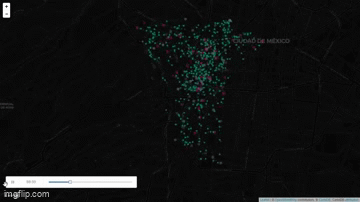
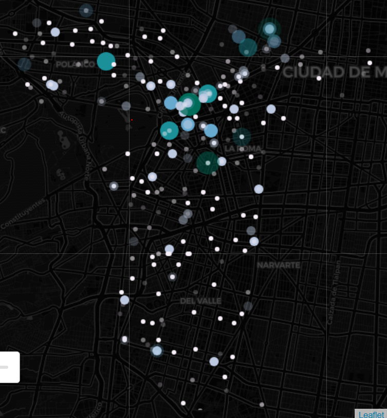

Viajes por Mes
Pirámide de Sexo y Edad
Viajes por Sexo y Edad
Proporción de Mujeres
Heatmap de Viajes por Día y Hora
Duración de Viajes por Día y Hora
Heatmap de Viajes entre Colonias
Mapa de Viajes por Colonia de Arribo

Mapa de Viajes por Colonia de Retiro
Mapa de red de viajes por hora, 2019
Disponibilidad de las estaciones en un día de 2019
Animación de viajes de Ecobici en un día de 2019

Ver gráfica completa
Animación del uso de estaciones de Ecobici en un día de 2019

Ver gráfica completa
Total de viajes por estación de arribo, 2019

Total de viajes por estación de retiro, 2019

Flujo de viajes de Ecobici en abril de 2024

Dirección de viajes de Ecobici en abril de 2024